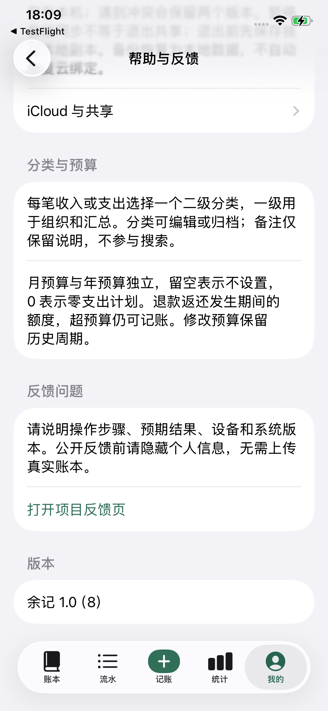
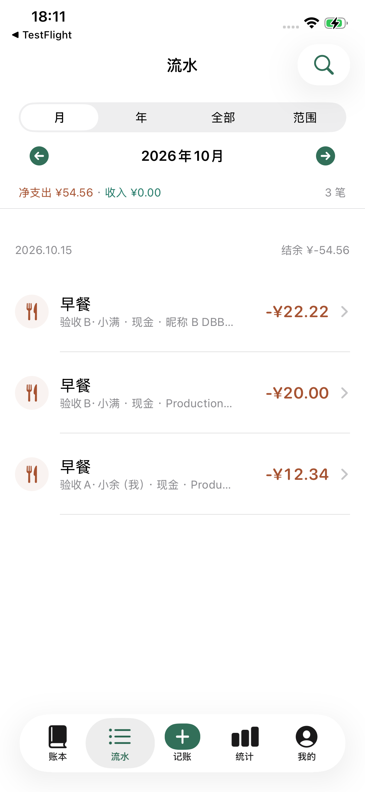
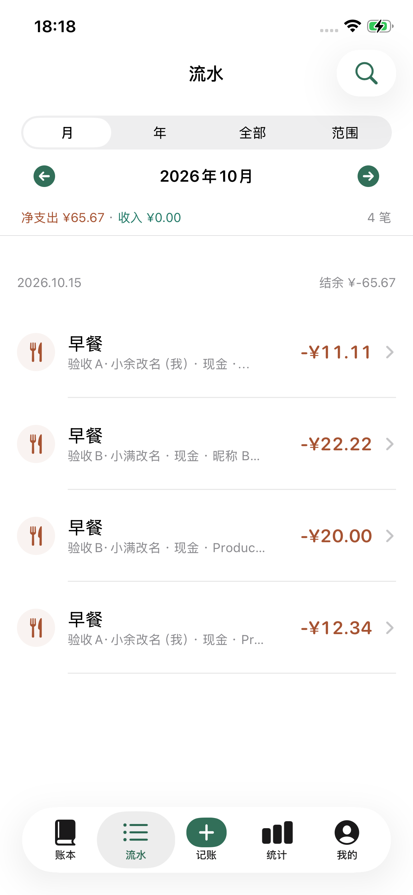
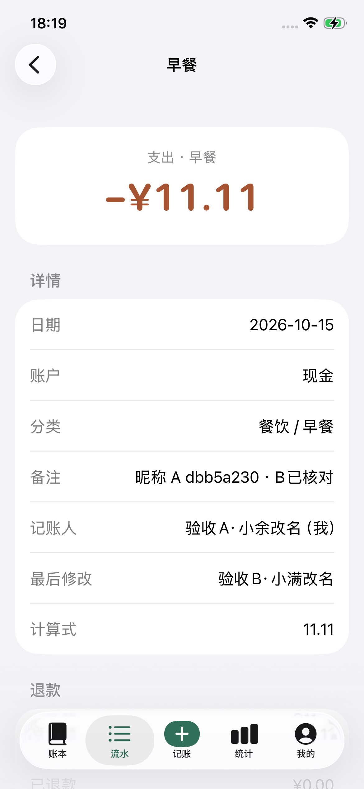
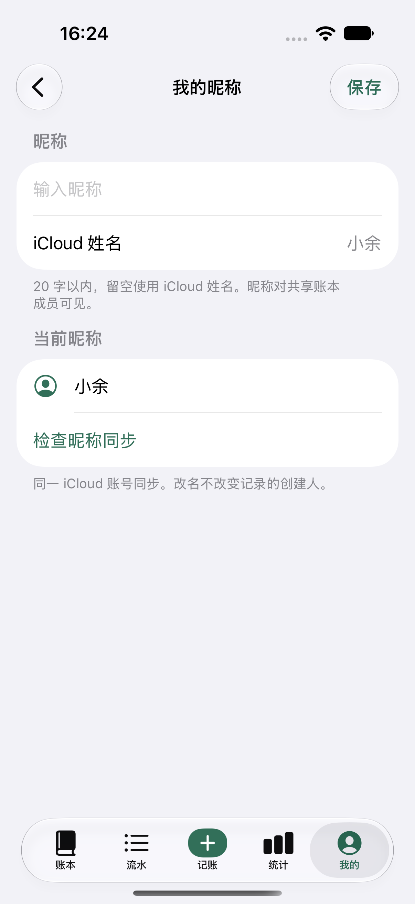
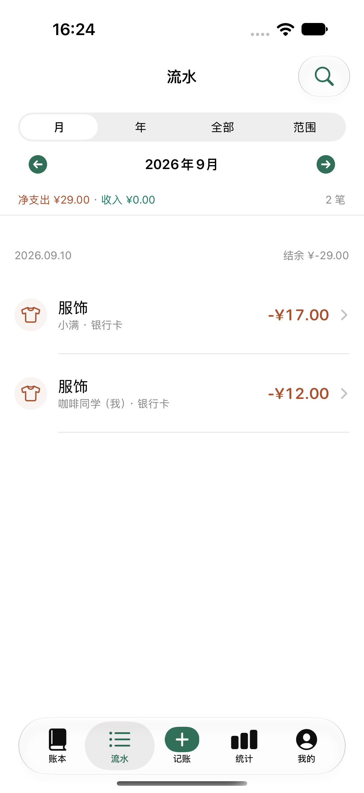
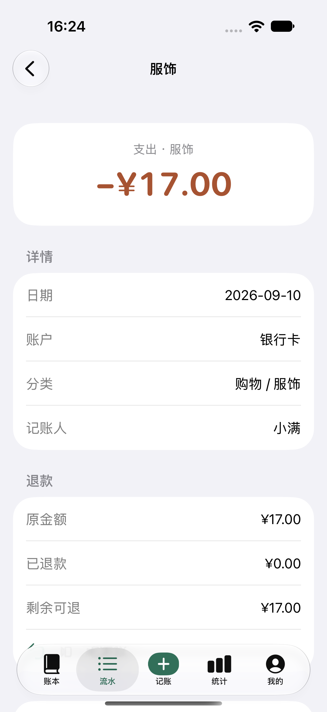
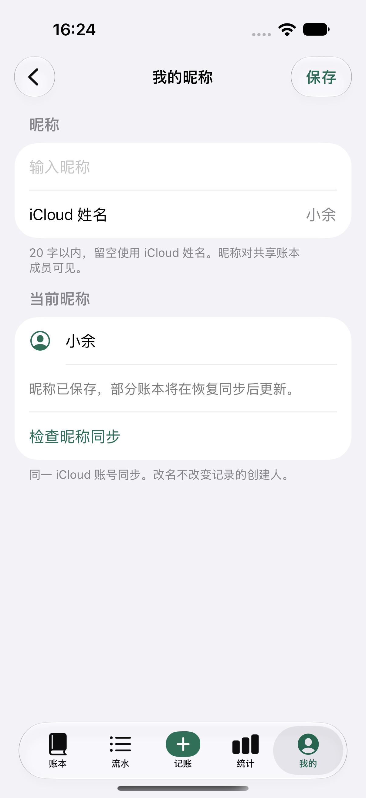
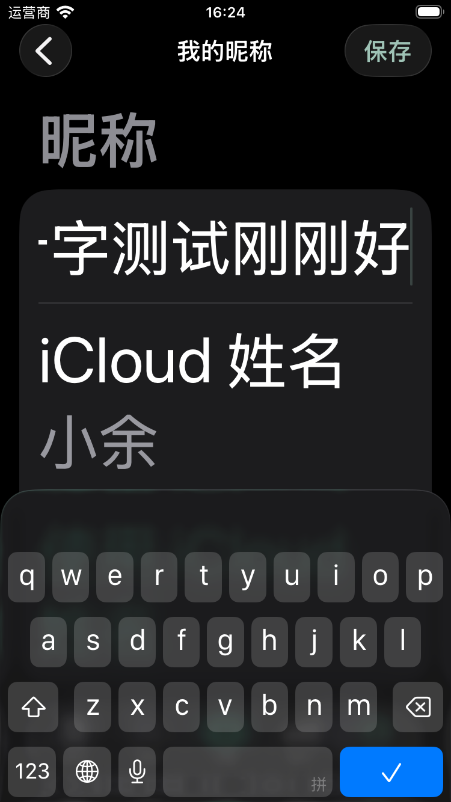
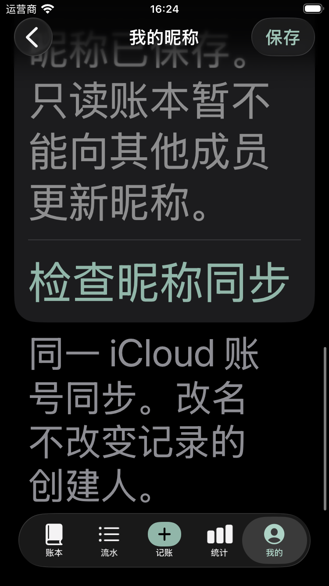

余记 · 记账人与昵称
同一 iCloud 账号统一昵称，支持自己改名。共享流水显示记账人，详情区分创建与最后修改；改名不改变历史归属。
TestFlight 1.0（8）已安装。真实 A/B 昵称互看、双向改名、冷启动、新增及跨用户编辑通过。原昵称已恢复；原两笔不变，最终 QA 4 笔 ¥65.67，3 条支付收据保留。完整实测记录 · 只读快照断言
真实 iPhone · TestFlight 1.0（8）
2026-10-15 18:09–18:19，iPhone 12；A 为手机当前 iCloud，B 为另一真实 Mac iCloud 的 Catalyst 原生集成与 Production 服务回读。以下均为同一本 QA 账本的实际手机截图，不是模拟昵称。无需切换账号，没有再次支付或提交 App Review。
真机已安装 TestFlight 1.0（8）
真实两账号昵称互看
双向改名后新记一笔
A 创建、B 修改，归属不变隔离模拟器 · 适配与边界
下方 6 张来自 16:24 的隔离模拟数据，仅证明当时的视觉与适配；不能替代真实云证据。172 条 portable、9 条原生状态和 2 条 UI 用例已通过，计数不与重复阶段相加。设计与验收说明。入口：我的 → 偏好 → 我的昵称。
iCloud 默认姓名
共享流水显示记账人
单笔详情保留创建人
清空后恢复默认姓名
小屏、深色、最大字号输入
只读成员的明确限制